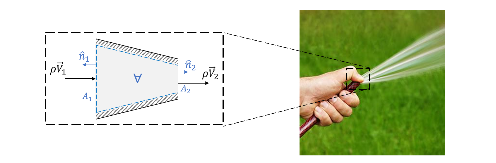
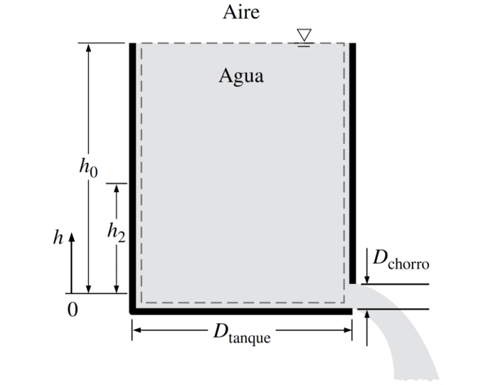
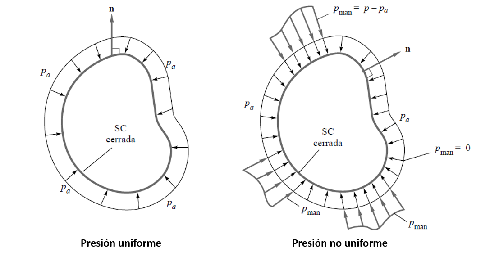
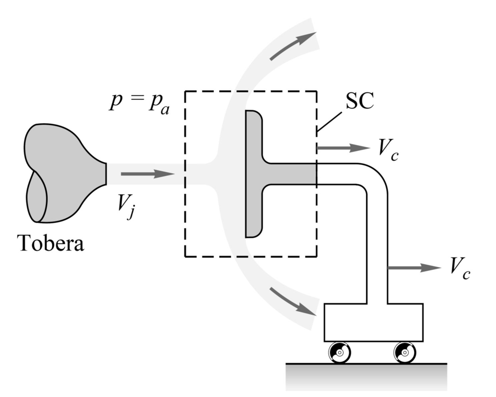
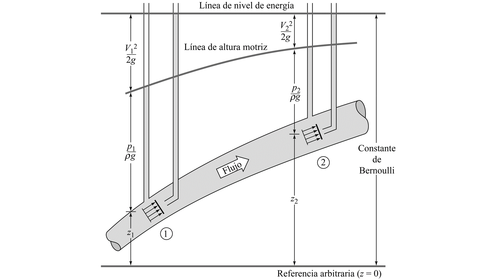

3. Introducción a la dinámica de fluidos#
3.1. Sistema y volúmen de control#
3.1.1. Sistema#
Definimos como sistema a una cantidad de materia de masa fija elegida para el estudio
En general, para el estudio de sólidos, la definición de sistema es sencilla, ya que este considera la interacción del cuerpo con las fuerzas externas.
Sin embargo, en el caso de fluidos, la definición no es tan sensilla ya que el sistema ocupa un espacio infinito.
3.1.2. Volumen de control#
Para estudiar dinámica de fluidos utilizamos el volúmen de control, una región imagniaria en el espacio para analizar la dinámica de fluidos.
{kind=link}
Nota. Las frontera de un volumen de control pueden ser permeables o impermeables, móbiles o fijas.
3.2. Teorema de transporte de Reynolds (TTR)#
3.2.1. Leyes de conservación aplicadas a un sistema#
Consideremos algunas leyes de conservación fundamentales aplicadas a un sistema:
Masa (\(m_\mathrm{sys}\)),
Momento lineal \((m\vec{V})_\mathrm{sys}\),
Momento angular \((\vec{r}\times m\vec{V})_\mathrm{sys}\),
Energía \(E_\mathrm{sys} =(m\tilde{e})_\mathrm{sys}\),
donde \(\vec{F}_\mathrm{neta}\) y \(\vec{M}_\mathrm{neto}\) son, respectivamente, la fuerza y torque aplicado sobre el sistema, \(\tilde{e}\) es la energía específica (energía por unidad de masa), \(\dot{Q}\) es la tasa de transferencia de calor, y \(\dot{W}\) es potencia.
En cada ley de conservación notamos que hay una propiedad extensiva \(B_\mathrm{sys}\) o neta (por ejemplo, \(E_\mathrm{sys}\)), y una propiedad intensiva \(\beta\) por unidad de masa (por ejemplo, \(\tilde{e}_\mathrm{sys} = E_\mathrm{sys}/m_\mathrm{sys}\)).
3.2.2. Formulación general#
El teorema de transporte de Reynolds establece una relación entre la variación temporal de una propiedad extensiva del sistema (\(B_\mathrm{sys}\)) y su respectiva propiedad intensiva dentro del volumen de control (\(\beta\))
En su forma más general, para un volumen de control móvil y deformable:
El término a la izquierda representa la tasa de cambio de \(B_\mathrm{sys}\) en el sistema.
El primer término a la derecha representa la tasa de cambio de \(\beta\) en el volúmen de control \(\mathrm{VC}\).
El segundo término a la derecha representa el flujo de \(\beta\) a través de las fronteras del volúmen de control (\(\mathrm{VC}\))
\(\vec{V}\) es la velocidad relativa del flujo que cruza la frontera del volúmen de control, respecto de la velocidad de la frontera\(\vec{V}_s\).

Notar que el rol de la normal a la superficie del volumen de control (\(\hat{n}\)) en la ecuación, que define un valor positivo para flujos que salen del volúmen de control, y un valor negativo para los flujos que entran.
Matemáticamente, el flujo neto de la propiedad \(B\) en el volúmen de control:
3.2.3. Formulación simplificada#
En muchas aplicaciones prácticas de ingeniería solo se conocen valores promedios del flujo, obtenidos a través de mediciones. En estos casos, las siguientes aproximaciones son útiles:
Propiedades aproximadamente uniformes dentro del volúmen de control
Valores promedio en la entrada y salida
donde \(\bar{\beta}\) y \(\overline{\rho}\) representan, respectivamente, el valor promedio por área de la propiedad intensiva \(\beta\) y de la densidad \(\rho\)
y \(\overline{V}\) es la velocidad promedio respecto al área \(A\)
{kind=link}
A partir de estas aproximaciones deducimos la formulación simplificada del teorema de transporte de Reynolds:
3.3. Ecuación de conservación de masa#
3.3.1. Formulación general#
En el caso de la conservación de masa del sistema
Aplicando el teorema de transporte de Reynold con \(B_\mathrm{sys} = m_\mathrm{sys}\) y \(\beta = 1\), deducimos la ecuación de conservación de masa para un volúmen de control:
Lidiamos con la ecuación de conservación de masa a menúdo en nuestra vida cotidiana
{kind=link}
Aplicando la ecuación de conservación de masa al ejemplo, tenemos:
Debido a que \(A_1 > A_2\), entonces:
3.3.2. Variables relevantes#
Aprovechamos esta ecuación para definir algunas variables relevantes:
Caudal (\(Q\))#
Se define como la tasa de cambio del volúmen de fluido que cruza un área, matemáticamente:
Flujo másico (\(\dot{m}\))#
Se define como la tasa de cambio de la mása que cruza un área, matemáticamente:
Si aplicamos esto considerando valores promedio y que la densidad dentro del volúmen de controle es uniforme, tenemos la siguiente expresión para la ecuación de conservación de masa:
En el caso de un fluido incompresible:
3.3.3. Ejemplo#
Un tanque cilíndrico abierto a la atmósfera está lleno con agua. Al quitar el tapón de descarga, la velocidad promedio a la salida es \(V = \sqrt{2gh}\), donde \(h\) es el nivel instantáneo de agua en el tanque medida desde el centro del agujero, y \(g\) es la aceleración de gravedad. Determíne el tiempo para que el nivel del agua descienda de \(h_0\) hasta \(h_2\).
{kind=link}
3.4. Ecuación de conservación de momentum lineal#
3.4.1. Formulación general#
Según la ley de Newton, la ecuación de conservación de momento lineal, es:
donde \(\vec{F}_\mathrm{ext}\) representa la fuerza externa neta sobre el sistema.
Aplicamos el teorema de transporte de Reynolds considerando:
Propiedad intensiva del momento lineal, \(\beta = \vec{V}\)
Conservación de momento lineal aplicado al sistema \(\frac{d}{dt}B_\mathrm{sys} = \frac{d}{dt}(m\vec{V})_\mathrm{sys} = \sum\vec{F}_\mathrm{ext}\).
La ecuación de conservación de momento lineal para un V.C. es:
la suma de fuerzas externas aplicadas en un V.C. es igual a la tasa de cambio de momento lineal dentro del V.C. y al balance de momento lineal en la entrada y salida del V.C.
Si aplicamos esto considerando valores promedio y que la densidad dentro del volúmen de control es uniforme, tenemos la siguiente expresión para la ecuación de conservación de masa:
3.4.2. Fuerza resultante por presión sobre la superficie#
Las fuerzas de superficie sobre un volumen de control se deben a:
fuerzas que aparecen en el corte de cuerpos sólidos que penetran a través de la superficie de control, y
fuerzas debidas a presión y viscosidad en el fluido del contorno.
La fuerza de presión sobre una superficie es perpendicular a ésta y dirigida hacia ella.
{kind=link}
Si la presión tiene un valor uniforme, la resultante es nula. Por ejemplo, en la figura de la izquierda:
Si no, la resultante tomará relevancia en las regiones con diferencia de presiones. Por ejemplo, en el caso de la figura derecha:
donde \(A_i\) y \(\hat{n}_i\) corrseponden, respectivamente, al área y vector normal (apuntando hacia afuera del volumen) de las superficies con presión diferencia de presiones.
3.4.3. Ejemplo#
Un chorro de agua de velocidad \(V_j\) incide perpendicularmente a una placa plana que se mueve hacia la derecha a velocidad \(V_c\). Calcule la fuerza necesaria para mantener la placa en movimiento a velocidad constante si la densidad del chorro es \(1000~\mathrm{kg/m^3}\), la sección del chorro es \(3~\mathrm{cm^2}\) y \(V_j\) y \(V_c\) son \(20\) y \(15~\mathrm{m/s}\), respectivamente. Desprecie el peso del chorro y de la placa y suponga que el chorro se divide en dos caudales iguales, uno hacia arriba y otro hacia abajo.
{kind=link}
3.5. Ecuación de conservación de energía#
3.5.1. Formulación general#
A partir del teorema de transporte de Reynolds, y considerando la propiedad intensiva de la energía, \(\tilde{e}\), definida como la energía por unidad de masa (\(\mathrm{kJ/kg}\), por ejemplo), tenemos que la ecuación de conservación de energía aplicada a un volúmen de control es:
donde:
\(\dot{Q}\), tasa de transferecia calor recibida por el sistema (\(\mathrm{kW}\))
\(\dot{W}\), tasa de trabajo (potencia) entregada por el sistema (\(\mathrm{kW}\))
Energía del fluido (\(\tilde{e}\))#
Considera todas las formas de energía presentes en el fluido:
donde:
\(\tilde{e}_\mathrm{interna} = \tilde{u}\) (energía interna)
\(\tilde{e}_\mathrm{cinética} = \frac{V^2}{2}\) (energía cinética)
\(\tilde{e}_\mathrm{potencial} = gz\) (energía potencial)
\(V\) es la velocidad promedio del fluido, \(z\) es la altura medida desde un punto de referencia común, y \(g\) es la aceleración de gravedad.
Transferencia de calor (\(\dot{Q}\))#
Energía asociada al calor transferido por diferencia de temperaturas.
Notar que \(\dot{Q} < 0\) si el volúmen de control pierde calor
Transferencia de trabajo (\(\dot{W}\))#
Considera el trabajo entregado o recibido por el sistema.
Notar que \(\dot{W} < 0\) si el sistema recibe trabajo.
Distinguimos tres formas principales de trabajo:
Trabajo de eje (\(\dot{W}_\mathrm{eje}\)), asociado al trabajo intercambiado con maquinarias, por ejemplo, trabajo de bombas (\(\dot{W}_\mathrm{eje} < 0\)), turbinas (\(\dot{W}_\mathrm{eje} > 0\)), ventiladores (\(\dot{W}_\mathrm{eje} < 0\)), etc.
Trabajo por presiones (\(\dot{W}_\mathrm{presion}\)), asociado al trabajo de presiones del fluido. Actúa solo en las fronteras del volúmen de control:
\[\begin{equation*} \dot{W}_\mathrm{presion} = \int_{VC} P(\vec{V}\cdot\hat{n})dA \end{equation*}\]
Trabajo por fuerzas viscosas (\(\dot{W}_\mathrm{viscosas}\)), asociado a la disipación de energía por fricción como resultado de viscosidad del fluido (\(\dot{W}_\mathrm{viscosas}\) > 0).
3.5.2. Ecuación de conservación de energía mecánica#
La ecuación de conservación de energía (3.14) no tiene mucho uso práctico en la ingeniería, debido a que los trabajos asociados a la presión y viscosidad están implícitos en la ecuación.
Una formulación más común se obtiene separando los trabajos de eje, presión y viscosas:
donde \(\tilde{h} = \tilde{u} + P/\rho\) es la entalpía o energía de flujo del fluido.
Si el sistema analizado no está sujeto a efectos térmicos (problema isotérmico y adiabático), \(\dot{Q} = 0\) y \(\tilde{u} = cte\), y obtenemos la ecuación de conservación de la energía mecánica:
Considerando un problema estacionario, con valores promedios en las entradas y salidas del volúmen de control:
3.5.3. Ecuación de conservación de energía mecánica para una línea de flujo#
En base a los casos anteriores, y considerando (1) flujo incompresible y (2) volúmen de control con una única entrada y salida, tenemos:
donde \(h_\mathrm{i} = \frac{\dot{W}_\mathrm{i}}{\rho VA}\), (\(i=\) \(\mathrm{bomba}\), \(\mathrm{turbina}\) y \(L\)) es la altura de presión equivalente asociada a la energía transferida por una bomba, turbina o viscosidad, respectivamente.
El término \(h_\mathrm{L}\) se conoce como la pérdida de carga, asociada al pérdida irreversible de energía mecánica por fricción y viscosidad.
La ecuación (4.7) representa la forma más utilizada de la ecuación de conservación energía mecánica. Se expresa en forma de alturas hidrostáticas, ya que permite facilmente identificar los cambios de presión en el ducto.

3.5.4. Ecuación de Bernoulli#
Si aplicamos la ecuación anterior en un tramo de un ducto, donde \(h_\mathrm{bomba} = h_\mathrm{turbina} = 0\), y asumimos fluido ideal, es decir, sin fricciones por viscosidad (\(h_L = 0\)), tenemos la ecuación de Bernoulli.
Esta ecuación, aunque tiene poco uso práctico, permite comprender en términos simples la conservación de energía en un fluido producto de los cambios de presión, velocidad y elevación.
{kind=link}
3.5.5. Ejemplo#
Una manguera de \(10~\mathrm{cm}\) de diámetro tiene una tobera de \(3~\mathrm{cm}\) por donde se descargan \(1.5~ \mathrm{m^3/min}\). Suponiendo flujo sin fricción, determine la fuerza \(F_B\) que se ejerce sobre los pernos que sujetan la tobera a la manguera.
{kind=link}
3.6. Referencias#
Çengel Y. A. y Cimbala M. J. Mecánica de Fluidos: Fundamentos y Aplicaciones, 4ta Ed., McGraw Hill, 2018
Capítulo 4.6: Teorema de transporte de Reynolds
Capítulo 5.2: Conservación de la masa
Capítulo 5.4: Ecuación de Bernoulli
Capítulo 5.5: Ecuación general de la energía
Capítulo 6.1: Leyes de Newton
Capítulo 6.4: La ecuación de conservación de la canrtidad de movimiento lineal
White F. M. Mecánica de Fluidos, 5ta Ed., McGraw Hill, 2004
Capítulo 3.1: Leyes básicas de la mecánica de fluidos
Capítulo 3.2: Teorema de transporte de Reynolds
Capítulo 3.3: Conservación de la masa
Capítulo 3.4: Conservación de la cantidad de movimiento
Capítulo 3.5: Ecuación de la energía